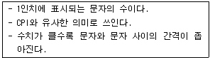
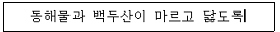
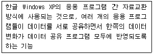
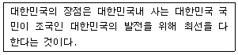
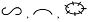

워드프로세서-(구-1급) (2007-07-29 기출문제)
1과목: 워드프로세싱 일반
1. 자료를 쉽게 검색하기 위해 사용되는 기능으로 소트(Sort)와 색인(Index)이 있다. 다음 중 두 기능의 차이점을 올바르게 설명한 것은?
- 소트(Sort)는 내림차순만 사용할 수 있다.
- 소트(Sort)는 오름차순만 사용할 수 있다.
- 색인(Index)은 내림차순만 사용할 수 있다.
- 색인(Index)은 오름차순만 사용할 수 있다.
(정답률: 55%)

2. 다음 중 차례(목차) 만들기 기능에 대한 설명으로 옳지 않은 것은?
- 종류에는 제목 차례, 표 차례, 그림 차례 등이 있다.
- 책이나 보고서, 논문을 작성할 때 유용하게 사용된다.
- 차례 만들기의 결과는 보통 지정된 파일로 저장한다.
- 현재 작업 중인 문서의 모든 정보를 제공하며 보통 화면의 아래 줄에 표시한다.
(정답률: 68%)
3. 다음은 워드프로세서에 사용되는 글꼴에 대한 설명이다. 아웃라인(Outline) 방식에 대한 설명으로 옳지 않은 것은?
- 폰트를 점으로 설계하고 제작하였으며, 화면에 표시된 점의 수와 출력된 글자를 구성하는 점의 수가 같다.
- 글꼴을 확대해도 테두리가 거칠게 나타나지 않아 고해상도의 출력물을 얻을 수 있다.
- 외곽선 글꼴이라고도 한다.
- 트루타입 글꼴, 벡터 글꼴, 포스트스크립트 글꼴이 대표적이다.
(정답률: 59%)
4. 다음 중 저장기능에 관한 설명으로 옳지 않은 것은?
- 워드프로세서 문서를 웹 문서로 변환하여 저장할 수 있다.
- 문서를 저장할 때 암호를 지정하여 저장할 수 있다.
- 문서를 저장할 때는 문서의 일부분을 저장할 수 없으므로 문서 전체를 저장해야 한다.
- 원본 파일이 삭제되거나 바이러스에 감염되는 것에 대비하기 위해서 백업파일을 만들 수 있다.
(정답률: 70%)
5. 다음 보기의 내용은 어떤 용어에 대하여 설명한 것인가?

- 스풀링(Spooling)
- 해상도(Resolution)
- 피치(Pitch)
- DPI(Dot Per Inch)
(정답률: 63%)
6. 다음 보기와 같은 커서의 위치에서 [Ctrl] 키를 누른 채로 왼쪽 화살표 키를 세 번 누른 결과로 옳은 것은?

(정답률: 77%)
7. 다음 보기의 내용은 전자출판의 어떤 기능을 설명한 것인가?

- ODBC 기능
- Merge 기능
- Margin 기능
- OLE 기능
(정답률: 66%)
8. 다음 중 복사(Copy) 후 붙여넣기(Paste) 기능을 대체하여 사용할 수 있는 기능으로 가장 적합한 것은?
- 스타일(Style)
- 매크로(Macro)
- 레이아웃(Layout)
- 캡션(Caption)
(정답률: 70%)
9. 다음 중 로드(Load)에 대한 설명으로 가장 적합한 것은?
- 현재 사용 중인 디스크드라이버를 말한다.
- 주기억장치의 내용을 보조기억장치에 저장한다.
- 주기억장치의 내용을 처리한다.
- 보조기억장치에 기억된 내용을 주기억장치로 이동한다.
(정답률: 65%)
10. 다음 보기의 문장을 효과적으로 입력시키기 위한 방법으로 적합하지 않은 것은?

- 복사하기(Copy)의 사용
- 상용구(Glossary)의 사용
- 매크로(Macro)의 사용
- 보일러플레이트(Boiler Plate)의 사용
(정답률: 69%)
11. 다음 중 워드프로세서의 기능에 대한 설명으로 옳지 않은 것은?
- 문서 편집시 행의 처음이나 끝에 특정 문자가 올 수 없도록 하는 것을 ‘금칙처리’라고 한다.
- 수정 전 파일과 수정 후 파일을 한 번에 저장할 수 있다.
- 복사, 붙여 넣기, 이동, 삭제를 위하여 반드시 영역지정이 필요하다.
- 영역으로 지정한 부분만을 별도로 저장할 수 있다.
(정답률: 46%)
12. 다음 중 기억장치에 대한 설명으로 옳지 않은 것은?
- SRAM은 재충전이 필요 없고 액세스 속도가 빨라 캐시 메모리로 많이 사용된다.
- PC에서 BIOS 정보나 자체 진단 프로그램 등을 저장하기 위해 DRAM을 사용한다.
- RAM에 저장된 정보의 위치는 주소로 구분한다.
- SRAM은 전원이 차단되면 기억된 내용이 지워지는 휘발성 메모리이다.
(정답률: 46%)
13. 다음 중 입출력 장치에 대한 설명으로 옳지 않은 것은?
- 스캐너(Scanner) : 그림이나 사진 등의 영상 정보를 문서에 입력할 수 있도록 변환해 주는 장치이다.
- 마우스(Mouse) : 워드프로세서를 사용할 때 편리하게 아이콘이나 메뉴를 선택할 수 있는 장치이다.
- OMR(Optical Mark Reader) : 손으로 쓴 숫자나 문자를 인식하는 장치이다.
- 디지타이저(Digitizer) : 미리 정해진 화면의 범위 내에서 좌표를 검출하여 도형 정보를 입력하는 장치이다.
(정답률: 59%)
14. 다음 중 전자출판에서 자간을 미세 조정으로 특정문자들의 간격을 조정하는 기능은?
- 디더링(Dithering)
- 커닝(Kerning)
- 리터칭(Retouching)
- 리딩(Leading)
(정답률: 76%)
15. 다음 중 공문서의 전자이미지관인에 관한 내용으로 옳지 않은 것은?
- 전자이미지관인은 컴퓨터 등 정보처리 능력을 가진 장치에 의하여 전자적인 이미지 형태로 사용되는 관인이다.
- 행정기관의 장은 전자문서에 사용하기 위하여 전자이미지관인을 가질 수 있다.
- 전자이미지관인을 사용하는 기관은 관인을 재등록한 경우 즉시 사용 중인 전자이미지관인을 삭제하고, 재등록한 관인을 전자 입력하여 사용한다.
- 전자이미지관인을 등록 또는 재등록하거나 폐기한 때에는 등록기관은 이를 관보에 공고하지 아니하여도 된다.
(정답률: 69%)
16. 공문서 작성시 수신기관이 두 군데 이상인 경우에 “수신자 참조”란이 새로이 설정되는 위치는?
- 두문에 표시한다.
- 본문에 표시한다.
- 수신란에 표시한다.
- 발신명의 왼쪽 아래에 표시한다.
(정답률: 47%)
17. 다음 중 대결한 문서에 대한 설명으로 옳지 않은 것은?
- 내용이 중요한 문서는 결재권자에게 사후에 보고하여야 한다.
- 정규 결재권자의 결재와 동일한 효력을 지닌다.
- 대결함으로써 문서로서의 성립이 이루어진다.
- 대결 후 결재권자에게 사후 보고시 문서수정이 가능하다.
(정답률: 65%)
18. 다음 중 DTP에 관한 설명으로 옳지 않은 것은?
- CD-ROM 타이틀의 저작도구이다.
- WYSIWYG의 구현이 가능하다.
- Desk Top Publishing의 머릿글자이다.
- 대부분 PC에서 작업이 가능하다.
(정답률: 54%)
19. 다음 중 교정부호 사용 시 유의할 점에 대한 설명으로 옳지 않은 것은?
- 교정부호를 표시하는 색은 눈에 잘 띄게 한다.
- 교정부호는 지정한 부호를 사용해서 교정한다.
- 한 번 교정된 부분은 다시 교정할 수 없다.
- 교정부호가 너무 복잡하거나 난해하지 않도록 한다.
(정답률: 83%)
20. 다음 중에서 문서의 분량이 증가할 가능성이 있는 교정부호들로만 올바르게 나열된 것은?

(정답률: 79%)
2과목: PC 운영 체제
21. 다음 중 한글 Windows XP의 [탐색기] 창에서 바로 가기키에 대한 설명으로 옳지 않은 것은?
- [Ctrl] + [F] : 검색 도우미 창이 표시된다.
- [Ctrl] + [E] : 폴더 목록 창이 표시된다.
- [Ctrl] + [H] : 열어본 페이지 목록 창을 표시한다.
- [Ctrl] + [I] : 즐겨 찾기 창을 표시한다.
(정답률: 49%)
22. 다음 중 한글 Windows XP에서 프린터의 공유에 관한 설명으로 옳은 것은?
- 처음 설치한 프린터는 기본적으로 공유가 설정된다.
- 기본 프린터는 공유 프린터로 자동 설정된다.
- 프린터를 공유하려고 하는 경우에는 공유에 관련된 추가 드라이버를 설치해야 한다.
- Windows 방화벽이 설치되어 있어도 프린터는 공유할 수 있다.
(정답률: 47%)
23. 다음 중 한글 Windows XP의 [그림판] 프로그램에서 선택된 영역에 대하여 할 수 있는 이미지 작업이 아닌 것은?
- 대칭 이동이나 회전
- 늘이기 및 기울이기
- 색 반전
- 화면 캡처
(정답률: 50%)
24. 한글 Windows XP에서 바탕 화면의 바로 가기 메뉴에 있는 [아이콘 정렬 순서]를 선택하였을 때 표시되는 하위 선택 항목이 아닌 것은?
- 바탕 화면 아이콘 표시
- 바탕 화면의 웹 항목 잠금
- 바탕 화면의 배경 그림 바꾸기
- 바탕 화면 정리 마법사 실행
(정답률: 53%)
25. 한글 Windows XP에서 디스크 공간을 보다 많이 확보하기 위한 방법으로 가장 올바르지 않은 것은?
- 사용하지 않는 파일을 제거한다.
- 최근에 시스템 복원한 내용을 제외하고 모두 제거한다.
- 드라이브나 폴더의 압축을 수행한다.
- 디스크의 단편화를 제거한다.
(정답률: 51%)
26. 한글 Windows XP에서 [컴퓨터 관리자] 계정의 사용자 권한에 관한 설명으로 옳지 않은 것은?
- 도메인 컨트롤러나 로컬 컴퓨터, 사용자와 그룹 계정을 설정하거나 관리하며, 암호의 사용 권한을 할당 또는 네트워킹에 문제가 있는 사용자를 지원할 수 있다.
- Administrator 그룹의 구성원으로서 도메인이나 컴퓨터에 대한 모든 권한을 가진다.
- 컴퓨터 시스템을 전반적으로 변경하고 소프트웨어를 설치하며, 컴퓨터의 모든 파일에 액세스할 수 있다.
- 해당 컴퓨터의 다른 사용자 계정과 동등하게 모든 액세스 권한을 가진다.
(정답률: 53%)
27. 다음 중 한글 Windows XP에서 파일이 복사가 되지 않는 경우는?
- C 드라이브에 있는 파일을 A 드라이브로 끌어다 놓기를 실행한다.
- 선택된 파일의 바로 가기 메뉴에 있는 [복사]를 실행한 후에 원하는 위치의 바로 가기 메뉴에 있는 [붙여 넣기]를 실행한다.
- C 드라이브에 있는 파일을 C 드라이브의 다른 폴더로 끌어다 놓기를 실행한다.
- 원본 파일이 있는 폴더 창에서 [편집] 메뉴의 [복사]를 선택하고 복사를 원하는 해당 폴더에서 [편집] 메뉴의 [붙여 넣기]를 실행한다.
(정답률: 56%)
28. 다음 중 한글 Windows XP의 레지스트리에 관한 설명으로 옳지 않은 것은?
- 트리 계층 구조로 조직되며 하이브, 키, 하위 키 및 값 항목으로 구성된다.
- 각 사용자 프로필과 시스템 하드웨어, 설치된 프로그램 및 속성 설정에 대한 정보를 포함한다.
- 컴퓨터 구성에 관한 정보가 구성되는 데이터베이스 저장소이다.
- 텍스트 편집기를 사용하여 레지스트리를 검사하고 수정해야 한다.
(정답률: 53%)
29. 다음 중 한글 Windows XP의 [탐색기] 창에 관한 설명으로 옳지 않은 것은?
- 작업 표시줄 내에 있는 [시작] 단추의 바로 가기 메뉴에서 [탐색]을 선택하여 실행한다.
- 수직으로 두 개의 창으로 구분되며, 왼쪽은 작업목록 창이고 오른쪽은 탐색 창이다.
- [탐색기]의 작업목록 창에서는 큰 아이콘, 아이콘, 간단히, 자세히 등의 보기 상태를 설정할 수 있다.
- 탐색 창에서 하위 폴더가 있을 경우에 [+]로 보이며, 하위 폴더를 감추려면 [-]를 클릭하면 된다.
(정답률: 47%)
30. 한글 Windows XP에서 프린터의 인쇄 관리자 창에서 [프린터] 메뉴를 이용하여 할 수 없는 작업은?
- 해당 프린터가 기본 프린터로 설정되었는지 파악할 수 있다.
- 해당 프린터의 공유를 설정할 수 있다.
- 문서의 인쇄를 일시적으로 중지시킬 수 있다.
- 해당 프린터에 인쇄 중인 모든 파일을 디스크에서 삭제할 수 있다.
(정답률: 68%)
31. 다음 중 한글 Windows XP에서 [시스템 도구]인 [디스크 조각 모음]에 관한 설명으로 옳지 않은 것은?
- [명령 프롬프트] 창에서 ‘defrag.exe’ 명령어를 사용하여 [디스크 조각 모음]을 실행할 수 있다.
- 조각난 파일과 폴더가 볼륨에서 각각 하나의 인접한 공간을 차지하도록 컴퓨터 하드디스크의 조각난 파일과 폴더를 통합한다.
- 조각 모음을 하는데 걸리는 시간은 볼륨 크기, 볼륨에 있는 파일의 수와 크기, 조각난 양, 사용 가능한 로컬 시스템 리소스를 포함한 다양한 요소에 따라 달라진다.
- [디스크 조각 모음]을 수행하는 동안에 실행 중인 다른 프로그램은 모두 닫아야 한다.
(정답률: 61%)
32. 한글 Windows XP에서 문서 편집기인 [메모장] 프로그램의 사용 방법으로 옳지 않은 것은?
- 시스템의 시간과 날짜를 입력하려면 [편집] 주메뉴의 [시간/날짜]를 선택한다.
- 편집 중인 문서 일부분의 문자 글꼴이나 색상을 변경하려면 [서식] 주메뉴의 [글꼴]을 선택한다.
- [편집] 주메뉴의 [찾기]를 선택하면 특정한 문자나 단어를 본문에서 찾을 수 있다.
- [메모장] 창의 크기(가로)에 맞도록 텍스트를 편집하려면 [서식] 주메뉴에서 [자동 줄 바꿈]을 선택한다.
(정답률: 54%)
33. 한글 Windows XP에서 파일이나 폴더 만드는 방법으로 옳지 않은 것은?
- 파일이나 폴더 이름에 공백을 사용할 수 있지만 ‘;’는 사용할 수 없다.
- 작업 표시줄의 바로 가기 메뉴를 이용하여 새로운 폴더를 만들 수 없다.
- 폴더의 이름과 파일의 이름으로 사용할 수 있는 문자는 서로 같다.
- CON, PRN, AUX, NUL 등과 같은 단어는 파일의 확장명으로는 사용이 가능하지만 파일명으로는 사용할 수 없다.
(정답률: 40%)
34. 다음 중 한글 Windows XP에서 [원격 지원]에 관한 설명으로 옳지 않은 것은?
- 다른 위치에 있는 상대방이 Windows와 같이 호환되는 운영체제가 실행되는 컴퓨터에서 사용자 컴퓨터를 편리하게 연결하여 문제를 해결할 수 있다.
- 사용자의 도우미는 모두 Microsoft Outlook 또는 Outlook Express 같은 MAPI 호환 전자 메일 계정이나 Windows Messenger Service를 사용해야 한다.
- 사용자의 도우미는 원격 지원을 사용하는 동안에는 인터넷을 사용할 수 없도록 설정한다.
- LAN(Local Area Network)에서 작업 중인 경우에는 방화벽으로 인해 원격 지원을 사용하지 못할 수 있다.
(정답률: 55%)
35. 다음 중 한글 Windows XP에서 새로운 하드웨어 추가와 관련된 설명으로 옳지 않은 것은?
- 한글 Windows XP는 새로운 하드웨어 설치를 손쉽게 해주는 PnP 기능을 지원한다.
- 새로운 하드웨어를 추가하려면 [제어판]에 있는 [새 하드웨어 추가]를 선택하여 지시사항대로 설정한다.
- PnP 기능을 지원하지 않는 하드웨어의 설치는 [하드웨어 추가 마법사]에서 자동적으로 이루어진다.
- 새로운 하드웨어 추가시 PnP 기능을 지원하는 장치인 경우에는 검색한 하드웨어의 설정값을 자동으로 지정하고 해당 드라이버를 설치한다.
(정답률: 59%)
36. 다음 중 한글 Windows XP의 작업 표시줄에 대한 잘못된 설명은?
- [작업 표시줄 및 시작 메뉴 속성] 창에서 알림 영역의 시계를 표시하지 않도록 설정할 수 있다.
- 바로 가기 메뉴의 [작업 관리자]를 선택하면 바탕 화면에 자주 사용하는 프로그램이나 파일의 바로 가기 아이콘을 만들 수 있다.
- [시작] 단추를 클릭하면 [시작] 메뉴가 표시된다.
- 현재 열려져 있는 창이나 작업 중인 내역이 나타나며, 자주 사용되는 프로그램 아이콘을 배치할 수도 있다.
(정답률: 49%)
37. 한글 Windows XP에서 새로운 글꼴을 설치하는 방법으로 옳은 것은?
- [제어판]의 [프로그램 추가/제거]를 이용하여 폰트를 설치한다.
- ‘C:\Windows\Fonts’ 폴더에 해당 글꼴 파일을 복사하면 설치된다.
- PnP 기능으로 하드디스크에 복사된 글꼴은 자동으로 설치된다.
- 새로운 글꼴을 [글꼴 정리 마법사]에 의해 설치할 수 있다.
(정답률: 55%)
38. 다음 중 한글 Windows XP에서 네트워크에 연결된 [로컬 영역 연결]의 속성 창을 이용하여 설정할 수 없는 것은?
- [연결되면 알림 영역에 아이콘 표시]를 설정할 수 있다.
- [연결되지 않았거나 연결이 제한되면 알림]을 설정할 수 있다.
- [로그온 암호 사용]을 설정할 수 있다.
- [Windows 방화벽]을 설정할 수 있다.
(정답률: 40%)
39. 다음 중 한글 Windows XP에서 [시작] 메뉴의 사용에 관한 설명으로 옳지 않은 것은?
- 자주 사용하는 프로그램을 [시작] 메뉴에 추가하여 빠르게 실행할 수 있다.
- 응용 프로그램을 설치하여 추가된 [시작] 메뉴 항목은 삭제할 수 없다.
- [작업 표시줄 및 시작 메뉴 속성] 창을 통하여 항목 변경이 가능하다.
- [시작] 메뉴는 계층적인 구조를 가진다.
(정답률: 65%)
40. 한글 Windows XP에서 [휴지통]에 관한 설명으로 옳지 않은 것은?
- [휴지통]의 크기에 대한 초기 설정은 하드디스크의 10%이다.
- [휴지통]에 있는 파일들은 디스크의 공간을 차지한다.
- 파일을 삭제한 후에 얼마 기간이 지나면 [휴지통]에 있는 파일은 자동으로 삭제된다.
- [Shift] 키를 누른 상태로 해당 파일을 드래그하여 [휴지통]에 넣으면 파일이 [휴지통]에 보관되지 않고 바로 삭제된다.
(정답률: 64%)
3과목: 컴퓨터 및 정보활용
41. 다음 중 컴파일러(Compiler) 언어와 인터프리터(Interpreter) 언어의 차이점에 대한 설명으로 옳지 않은 것은?
- 인터프리터 언어가 컴파일러 언어보다 일반적으로 실행 속도가 빠르다.
- 인터프리터 언어는 대화식 처리가 가능하나, 일반적으로 컴파일러 언어는 불가능하다.
- 컴파일러 언어는 목적 프로그램이 생성되는 반면, 일반적으로 인터프리터 언어는 목적 프로그램이 생성되지 않는다.
- 인터프리터는 번역 과정을 따로 거치지 않고 각 명령문에 대한 해석(Decoding)을 거쳐 직접 처리한다.
(정답률: 38%)
42. 다음 중 정보보안 기술에 해당되지 않는 것은?
- 암호화, 접근 통제 등 정보보호 메커니즘을 제공하기 위한 기술
- 정보 시스템과 네트워크에서 정보의 안전, 신뢰성을 보장하기 위한 바이러스 백신, 운영체제 보안, 침입 탐지, 침입 차단, 가상 사설망 등의 응용 기술
- 보안 기반 기술과 응용 기술을 이용하는 정보 시스템과 네트워크를 효율적으로 관리하기 위한 보안 관리 기술
- 셰어웨어 및 상업용 소프트웨어의 저작권을 보호하기 위한 상표등록 관리 기술
(정답률: 63%)
43. 대용량의 멀티미디어 자료를 작은 조각으로 나누어 연속적으로 조금씩 전송함으로써 전체를 다운로드(Download) 받지 않고도 실시간(Real-Time)으로 재생시켜 주는 기술을 무엇이라고 하는가?
- Streaming
- Video On Demand
- Hypertext
- Animation
(정답률: 71%)
44. 다음 중 인터넷 윤리의 기능과 가장 거리가 먼 것은?
- 사이버 공간의 무질서와 혼돈에 대한 하나의 반응으로 출현한 것이기 때문에 인간의 경험이나 제도, 정책의 변형 필요성을 강조해야 한다.
- 국지적 윤리가 아닌 세계 보편윤리가 되어야 한다.
- 인터넷과 관련된 인간의 책임을 강조하는 윤리가 되어야 한다.
- 향후 정보통신 기술이 수반하게 될 제반 윤리적인 문제는 사후에 반영되어야 한다.
(정답률: 61%)
45. 다음 중 하드디스크로 부팅이 되지 않을 경우 취해야 할 조치로 가장 거리가 먼 것은?
- 일단 부팅 가능한 CD-ROM이나 플로피디스크로 부팅해 본다.
- CMOS 설정에서 하드디스크가 정상적으로 설정되었는지 확인한다.
- 메모리 부족 현상이므로 메모리를 증설한다.
- 부팅 디스크를 이용하여 디스크 검사를 한다.
(정답률: 66%)
46. 다음 중 중앙처리장치(CPU)에 대한 설명으로 옳은 것은?
- 연산장치(ALU)와 주기억장치(Main Memory) 만으로 구성되어 있다.
- 일반적으로 RISC는 CISC에 비해 명령어 종류가 많다.
- 연산될 자료를 보관하는 레지스터를 데이터 레지스터라고 한다.
- 명령 레지스터는 다음에 실행할 명령의 주소를 기억하는 레지스터이다.
(정답률: 35%)
47. 다음 중에서 주소 대신 기억되어 있는 정보를 이용하여 접근할 수 있는 기억장치는?
- 가상(Virtual) 기억장치
- 연상(Associative) 기억장치
- 캐시(Cache) 기억장치
- 보조(Auxiliary) 기억장치
(정답률: 49%)
48. 공중 데이터 통신망(Public Data Network)에서 데이터를 교환하는 방식에는 회선 교환(Circuit Switching)과 패킷 교환(Packet Switching)이 있다. 다음 중 패킷 교환에 관한 설명으로 옳은 것은?
- 데이터를 전송하는 동안 일정하게 고정된 경로를 사용한다.
- 회선교환에 비해서 대규모의 데이터 전송이 가능하다.
- 정보 전송의 필요성이 생겼을 경우 상대방을 호출하여 물리적으로 회선을 연결한다.
- 가상회선(Virtual Circuit) 방식과 데이터그램(Datagram) 방식의 두 가지 방식이 있다.
(정답률: 36%)
49. PC에서 메인보드를 구성하는 요소로서 데이터의 송수신과 관련된 제어를 담당하는 것으로 CPU, 기억장치, 시스템버스 간의 데이터 흐름을 제어하는 것은?
- 바이오스
- 칩셋
- 모듈 램
- 연결 포트
(정답률: 51%)
50. 다음 중 데이터 전송시 변조의 필요성에 대한 설명으로 옳은 것은?
- 변조는 데이터를 손실 없이 가능하면 멀리 전송하기 위한 것이다.
- 변조는 근거리 전송에만 사용되며, 장거리 전송에는 사용되지 않는다.
- 변조란 데이터를 전송하기 위한 반송파를 발생시키는 것이다.
- 변조는 수신된 데이터를 원래의 데이터로 복원시키는 기능이다.
(정답률: 50%)
51. 다음 중 CPU가 데이터를 출력하기 위하여 프린터로 데이터를 전송할 때 처리시간을 단축시키기 위해 하드디스크와 같은 보조기억장치에 데이터를 일시 저장해 두었다가 전송하는 기법은?
- 순서배치
- 가상기억
- 스풀링
- 시분할
(정답률: 54%)
52. 다음 중 멀티미디어 데이터 파일 형식에 대한 설명으로 옳지 않은 것은?
- 비트맵 이미지 파일 형식으로는 BMP, JPG, GIF 등이 있다.
- 백터 그래픽 파일 형식으로는 DXF, WMF, CDR 등이 있다.
- 사운드 파일 형식으로는 MP3, PNG, MPEG 등이 있다.
- 동영상 파일 형식으로는 AVI, DVI, MOV 등이 있다.
(정답률: 52%)
53. 다음 중에서 하드웨어나 소프트웨어의 성능을 검사하기 위해 실제로 사용되는 조건에서 처리 능력을 테스트하는 것을 무엇이라고 하는가?
- 버그 테스트
- 베타 테스트
- 메모리 테스트
- 벤치마크 테스트
(정답률: 39%)
54. 다음 중 오늘날 컴퓨터의 기본원리인 프로그램 내장방식에 대한 설명으로 옳지 않은 것은?
- 기억장치에 계산의 순서를 미리 저장한다.
- 프로그램은 실행 전 주기억장치에 저장된다.
- 명령처리는 프로그램 계수기(Program Counter)에 의해 순차적으로 이루어진다.
- 1671년 라이프니츠에 의해 이론이 정립되었다.
(정답률: 59%)
55. 다음 중 컴퓨터의 분류에 대한 설명으로 옳지 않은 것은?(문제오류로 실제 시험장에서는 모두 정답 처리된 문제입니다. 여기서는 1번을 정답 처리 합니다.)
- 범용 컴퓨터는 다양한 종류의 디지털 데이터에 대한 처리가 용이하다.
- 워크스테이션은 고성능 컴퓨터로 CISC 프로세서를 주로 사용한다.
- 미니컴퓨터는 마이크로컴퓨터보다 처리 용량과 속도가 뛰어나다.
- 하이브리드 컴퓨터는 디지털 컴퓨터와 아날로그 컴퓨터의 장점을 혼합한 형태이다.
(정답률: 68%)
56. 그래픽 기법에서 3차원 애니메이션을 만드는 과정 중의 하나로 물체의 모형에 명암과 색상을 입혀 사실감을 나타내는 처리 과정을 무엇이라고 하는가?
- 디더링
- 모델링
- 랜더링
- 필터링
(정답률: 51%)
57. 다음 중 컴퓨터가 한 번에 처리할 수 있는 데이터의 크기를 나타내는 것으로 옳은 것은?
- 레지스터(Register)의 크기
- 캐시메모리(Cache Memory)의 크기
- 램(RAM) 용량의 크기
- 롬(ROM) 용량의 크기
(정답률: 47%)
58. 기업체, 은행 등의 본ㆍ지점 간에 발생하는 내부 업무처리를 위해 별도의 네트워크를 구축하기보다 인터넷망을 사용할 경우 재택 근무가 가능해지고 어디에서나 회사 네트워크에 연결하여 작업을 할 수 있게 되었다. 이와 같이 인터넷망을 이용하여 회사 업무의 네트워크를 구축한 것을 무엇이라고 하는가?
- Intranet
- InterLAN
- VAN
- OSI
(정답률: 51%)
59. 오디오, 비디오, 이미지 등의 디지털 콘텐트에 사람의 육안으로는 구별할 수 없도록 저작원의 정보를 삽입하여 불법 복제를 막는 기술을 무엇이라고 하는가?
- 카피라잇(Copyright)
- 카피레프트(Copyleft)
- 워터마킹(Watermarking)
- 스패밍(Spamming)
(정답률: 58%)
60. 다음 중 각각의 통신망 구조(Topology)에 대한 장점을 설명한 것으로 옳지 않은 것은?
- 스타(STAR)형 - 고장 발견이 쉽고 유지보수 및 확장이 용이하다.
- 링(RING) 형 - 노드 하나에 문제가 발생하더라도 전체 네트워크에 영향을 주지 않는다.
- 버스(BUS)형 - 설치가 용이하고 케이블링에 드는 비용을 최소화할 수 있어 경제적이다.
- 망(MESH)형 - 응답시간이 빠르다.
(정답률: 62%)